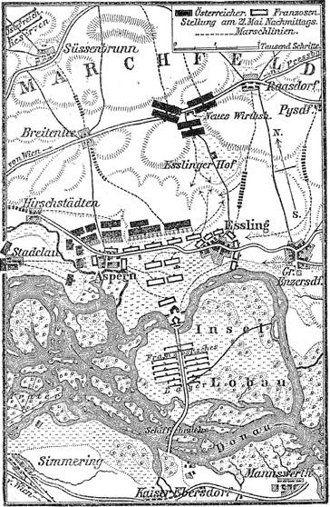

Trên đường từ Tilsit về Paris, Napoléon được toàn nước Đức đón rước với lòng hâm mộ đầy tính chất nô lệ. Hình như quyền lực của Napoléon đã lên tới mức độ mà chưa một đế vương nổi tiếng nào trong lịch sử đạt được. Là Hoàng Đế chuyên chế của đế quốc Pháp rộng lớn, bao gồm Bỉ, Tây Đức, Piedmont, Genoa; là vua nước Ý là người bảo hộ (thực tế là chúa tể) những đất đai rộng lớn của Liên Bang Sông Rhine, cộng cả xứ Saxony vừa mới sáp nhập; là kẻ thống trị nước Thuỵ Sĩ; Napoléon cũng là đế vương chuyên chế ở nước Hà Lan và ở vương quốc Naples y như trong đế chế của mình, vì Napoléon đã đặt em là Louis và anh là Joseph ngồi lên trên ngai vàng của hai nước ấy; cũng như ở tất cả miền trung và một phần miền Bắc nước Đức, Napoléon đã giao cho người em thứ ba là Jérôme cai trị với danh hiệu là vương quốc Westphalia; cũng là đế vương một bộ phận lớn thuộc những đất đai cũ của dòng họ Habsburg mà Napoléon đã tước của nước Áo và giao cho vua xứ Bavaria là nước chư hầu của mình; cũng là đế vương trên bờ biển miền Bắc Châu Âu, nơi quân đội của Napoléon đang chiếm đóng các thành phố Hamburg, Bremen, Luisenburg, Danzig, Königsberg và ở Ba Lan thì quân đội của nó vừa mới thành lập được đặt dưới quyền chỉ huy của Thống Chế Davout và tuy danh nghĩa là quốc vương xứ Saxony nhưng thực ra chỉ là một chư hầu và một người tôi tớ của Napoléon với danh hiệu là Đại Công Tước.
Ngoài ra, đảo Ionian, thành phố Cattaro và một phần bờ biển Adriatic, dọc theo bán đảo Balkan, cũng thuộc về Napoléon. Nước Phổ bị thu hẹp trong một khu vực nhỏ bé và quân đội bị hạn chế gắt gao, run sợ mỗi khi Napoléon hé miệng, và còng lưng đóng góp đủ các loại thuế má; nước Áo câm lặng và chịu khuất phục; nước Nga đã liên minh chặt chẽ với nước Pháp. Duy chỉ còn nước Anh là tiếp tục đấu tranh.
Về tới Paris, với sự giúp đỡ của Bộ Trưởng Tài Chính Godin và Bộ Trưởng Ngân Khố Mollien, Napoléon đã tiến hành hàng loạt cuộc cải cách quan trọng nhằm tổ chức lại nền tài chính, thuế trực thu và gián thu, v.v., nhờ vậy, số thu nhập trong đất đai của Hoàng Đế (từ 750 đến 770 triệu), cưỡng đoạt được do sự bóc lột tàn nhẫn nhân dân Pháp và các nước tay chân, đủ cho các khoản chi tiêu, kể cả những khoản trù trước để chi vào việc nuôi dưỡng quân đội khi xảy chiến tranh. Đó là một đặc điểm của nền tài chính dưới thời Napoléon: Napoléon coi các khoản chi phí về chiến tranh như “các khoản chi thông thường”, không có chút gì là đặc biệt cả. Ngân sách của Nhà Nước được đảm bảo chắc chắn và Ngân Hàng Pháp thành lập dưới thời Napoléon (còn tồn tại đến bây giờ cùng với những điều lệ đó) chỉ trả 4% lãi cho các tồn khoản, chứ không trả 10% như năm 1804 và 1805 vẫn còn thi hành. Nước Ý, với danh nghĩa là vương quốc “độc lập” của nước Pháp, hàng năm phải nộp cho nước Pháp một khoản đảm phụ 36 triệu francs vàng, và Napoléon nhà vua hào hiệp của nước Ý, lại hào hiệp nộp hết cho Hoàng Đế của người Pháp tức là Napoléon. Còn những khoản chi tiêu về hành chính của nước Ý thì do những khoản thu nhập của bản thân nước Ý trang trải. Đại diện của Napoléon ở Ý là một phó vương, không phải ai xa lạ mà chính là Eugène de Beauharnais, con riêng của vợ Napoléon. Tất nhiên là nước Ý phải chịu mọi khoản phí tổn nuôi dưỡng quân đội Pháp đóng ở trên đất nước. Các nước khác, đặt dưới quyền cai trị trực tiếp hay gián tiếp của Napoléon, đều phải nộp những khoản đảm phụ tương tự như vậy, nhất là những khoản chi phí về nuôi dưỡng quân đội Pháp. Với số vàng bòn rút ở các nước bị trị, với các khoản đảm phụ và các khoản cống nộp khác đã qui định cho các nước ấy, Napoléon đúc tiền một cách đều đặn ở Pháp, và số tiền vàng đó được dùng trong việc lưu thông buôn bán. Việc cải cách tiền tệ do Napoléon khởi thảo từ thời kỳ Tổng Tài, đã hoàn thành vào năm 1807, sau khi ở Tilsit về.
Napoléon cũng định dùng nhiều biện pháp để chấn hưng nền kỹ nghệ Pháp, nhưng về mặt này tình hình phức tạp hơn; những cải cách đã đặt ra ấy phải tiến hành song song và gắn chặt với việc thực hiện có hiệu lực cuộc phong tỏa lục địa. Sau khi ở Tilsit trở về được ít lâu, Napoléon bắt đầu trù tính một quy hoạch chính trị lớn, mà theo Napoléon, nếu không làm như vậy thì sự thực hiện phong tỏa nước Anh sẽ trở thành một trò quái gở. Và cũng chỉ có sau khi lao mình vào cuộc phiêu lưu đó, Napoléon mới dốc hết tâm lực vào lĩnh vực kinh tế. Cho nên, trước khi bước sang phân tích những hậu quả của cuộc phong tỏa lục địa đối với các tầng lớp xã hội khác nhau trong đế chế và đối với toàn bộ đường lối chính sách của Napoléon trước hết chúng ta cần tìm hiểu nguồn gốc của công việc đó, tức là âm mưu đánh chiếm lấy bán đảo Tây Ban Nha.
Nên chú ý rằng từ mùa thu năm 1807 đến mùa đông năm 1808, giữa Hoàng Đế và các Thống Chế, các Bộ Trưởng và các viên chức cao cấp thân cận nhất đã thấy chớm nở sự khác nhau nào đó về quan điểm, nhưng sự khác nhau đó thực ra còn ngấm ngầm và mập mờ.
Triều đình Napoléon chìm ngập trong sự xa hoa: Quý tộc cũ và mới, đại tư sản già và trẻ ganh nhau tiếng tăm bằng những tiệc tùng, yến hội, khiêu vũ; vàng tuôn ra như nước, các hoàng tử nước ngoài, vua chúa các nước chư hầu đến chầu, lưu lại ngày này qua ngày khác ở cái thủ đô của cả thế giới và ném vào đấy bao nhiêu của cải. Một thứ hội hè tráng lệ, linh đình như cảnh thần tiên lạc thú liên tiếp diễn ra ở cung điện Tuileries, Fontainebleau, Saint Cloud, Malmaison. Chế độ cũ chưa bao giờ được thấy cảnh xa hoa lộng lẫy đến như vậy, cũng không bao giờ được thấy một đám đông nườm nượp những nam nữ triều thần. Nhưng, tất cả bọn họ đều biết rằng trong một căn phòng kín đáo của lâu đài mà âm thanh của những cuộc thú vui không lọt tới, người chúa của họ đang cúi đầu xuống tấm bản đồ của bán đảo Tây Ban Nha và rồi, khi lệnh của Hoàng Đế ban ra, một số lớn những người nhởn nhơ vui chơi vô tư lự ấy sẽ phải lập tức vĩnh biệt mọi thứ xa hoa lộng lẫy đang tràn lên cuộc sống của họ, để lại hiến mình cho mũi tên hòn đạn. Nhưng họ chiến đấu vì ai? Ngay sau trận Austerlitz, nhiều bạn chiến đấu của Napoléon ngỡ rằng đã đến lúc phải chấm dứt cuộc chinh chiến, rằng uy thế của nước Pháp đã lên tới mức cao chưa từng thấy và đã vượt quá cả lòng mong ước của nước Pháp. Thật vậy, toàn thể nhân dân của đế chế chịu khuất phục Napoléon, không kêu ca một lời: Người nông dân cho tới nay vẫn phải chịu đựng chế độ trưng binh, giới thương nhân (trừ giai cấp tư sản buôn bán ở các thành phố ven biển) và nhất là kỹ nghệ gia, vui mừng vì thị trường được mở rộng và vì tương lai của công việc làm ăn. Những viên chức cao cấp và các vị Thống Chế, sau trận Tilsit, đã bắt đầu suy nghĩ, họ không lo rằng một cuộc cách mạng bên trong sẽ uy hiếp trật tự của xã hội, họ biết bàn tay sắt của Napoléon đã kẹp chặt được dân thợ thuyền, song họ sợ điểm khác: Họ hãi hùng vì đất đai của Napoléon quá rộng lớn.
Quyền hành độc đoán, không ai kiểm soát và không giới hạn của Napoléon, xây dựng trên một khối hỗn hợp những quốc gia và dân tộc khác nhau, từ Königsberg đến dãy núi Pyrenées (và thực tế đã vượt sang cả bên kia) từ Warszawa và từ Danzig đến Naples và Brandici, từ Antwerp đến rặng núi vùng Tây Bắc Balkan, từ Hamburg đến Corfu, đã bắt đầu làm cho các cận thần của Napoléon lo ngại, Sự hiểu biết nông cạn nhất về lịch sử và tiếng nói của bản năng, dù có bị người ta bóp nghẹt, đã bảo cho họ biết rằng những kiểu đế quốc bao gồm cả hoàn cầu như vậy không tồn tại lâu dài được, chúng chỉ là những sản phẩm ngoại lệ, và hơn nữa là hiện tượng rất nhất thời đã phát triển đến tột độ, là kết quả của sự tác động giữa những lực lượng trong lịch sử. Họ hiểu rằng (và cuối cùng họ nói như vậy) tất cả những việc Napoléon đã làm, kể từ buổi đầu tiên khai nghiệp cho đến trận Tilsit, đều dựa vào sự xuất chúng hơn là vào thực tế lịch sử. Nhiều người trong bọn họ cũng có ý nghĩ như Talleyrand là nếu cứ tiếp tục ghi chép mãi những chiến công phi thường như vậy vào sử sách thì ngày càng gặp nhiều khó khăn và nguy hiểm.
Napoléon tỏ ra rộng lượng khác thường đối với những người giúp việc chính của mình, dù là quân nhân hay hành chính. Sau trận Tilsit, Napoléon tặng Thống Chế Lannes một triệu francs vàng, ban cho Thống Chế Ney hưởng suốt đời món tiền lợi tức hàng năm chừng 300.000 francs; Berthier được nửa triệu francs vàng và 405.000 francs lợi tức; các vị Thống Chế khác, một loạt các sĩ quan và tướng lĩnh cũng được hưởng phụ cấp hậu hĩ như vậy, Các Bộ Trưởng Godin, Mollien, Talleyrand, Fouché tuy không được ưu đãi như các Thống Chế nhưng Napoléon cũng không hẹp hòi đối với họ. Tất cả các sĩ quan của đội cận vệ và của đại quân đã thực sự tham gia chiến đấu, đều được ban thưởng, rất nhiều người được trợ cấp hậu và thương binh được lĩnh gấp ba so với những người khác.
Vả lại, ngân khố nước Pháp không mất một đồng một chữ để chi cho những sự rộng rãi ấy; ngoài những khoản đảm phụ khổng lồ mà các nước bại trận phải nộp cho nước Pháp thắng trận, Napoléon còn qui định cho các nước đó (có khi cho cả những thành phố và một vài nghiệp đoàn) những khoản cống nộp đặc biệt tổng cộng hàng chục triệu (vương quốc Westphalia 40 triệu; lập nông khố ở Hanover trị giá 20 triệu, lấy của Ba Lan từ 30 đến 35 triệu v.v.). Tất cả những khoản này đều thuộc Napoléon toàn quyền sử dụng. Sau khi đã hậu thưởng cho các cận thần, Napoléon cho chất đống số tiền vàng còn lại vào trong những “hầm nổi tiếng ở cung điện Tuileries”, giữ làm kho tàng cá nhân, và theo lời Napoléon, năm 1812 đã lên tới 300 triệu francs vàng. Số tiền chi lương cho triều thần và số tiền cung phí cho Hoàng Đế (25 triệu) chỉ là một giọt nước trong biển cả so với số tiền nằm đầy ắp trong kho của Napoléon mà Napoléon tự do chi dùng, và số tiền ấy hoàn toàn không dính líu gì đến ngân sách của Nhà Nước. Khốn khổ thay cho những nước bại trận! Napoléon nói rằng:” Chiến tranh phải nuôi chiến tranh”. Nguyên tắc ấy đã được áp dụng triệt để dưới thời Đế Chế Đệ Nhất.
Như vậy số lợi tức đồng niên đặc biệt mà Napoléon bòn rút của các nước bị chiếm lên tới hàng triệu đồng, Napoléon phân phối rất rộng rãi một phần số tiền ấy cho quân đội và viên chức. Nhưng chính những món tiền thưởng hậu hĩ mà Napoléon đã vung ra cho các Thống Chế và tướng lĩnh đã làm nảy nở trong họ lòng ham muốn an hưởng phú quý và danh vọng. Song, cuộc đời họ cứ trôi chảy và chìm đắm mãi trên con đường chinh chiến dài dặc, hầu như không bao giờ chấm dứt.
Ai cũng hiểu rằng, vừa mới ở Tilsit trở về, Napoléon đã chuẩn bị lực lượng cho cuộc viễn chinh sang Bồ Đào Nha, đi qua Tây Ban Nha. Phần đông không hiểu gì về mục đích của chiến dịch đó. Về vấn đề này, cần phải nhắc lại đến cuộc phong tỏa lục địa, vì từ thời kỳ này trở đi, nếu một phút nào đó ta quên cái việc phong tỏa lục địa thì sẽ không thể giải thích nổi bất cứ một hành động nào của Napoléon, dù là những hành động chẳng quan trọng gì lắm.
Trong khi đề ra mục đích phải bóp nghẹt nền kinh tế Anh bằng cuộc phong tỏa lục địa, Napoléon đã đúng là Napoléon: Ông ta không thể tin vào triều đại Bragança ở Bồ Đào Nha cũng như dòng họ Bourbon ở Tây Ban Nha; không thể tin rằng hai dòng họ hoàng gia ấy lại sẽ có thể tự nguyện và tận tình phá hoại tan tành đất nước họ bằng cách ngăn cấm nông dân, tiểu và đại địa chủ bán lông cừu Merinos cho người Anh, đồng thời ngăn cấm không cho sản phẩm kỹ nghệ Anh giá hạ được nhập vào Tây Ban Nha và Bồ Đào Nha. Rõ ràng là trong khi họ im lặng chấp thuận Đạo Luật Berlin thì họ cũng sẽ vui lòng nhắm mắt làm ngơ và sẽ tỏ ra dễ dãi ngấm ngầm với việc buôn lậu và sẽ dùng trăm phương nghìn kế khác để vi phạm cuộc phong tỏa lục địa. Với đất đai rộng lớn của bờ biển thuộc bán đảo Tây Ban Nha và khi biết rằng hạm đội Anh hiện đang làm chúa tể Vịnh Bitcasa, cũng như ở khắp Đại Tây Dương và Địa Trung Hải, khi pháo đài Gibraltar của Anh đang đứng sừng sững ở ngay trên bán đảo thì rõ ràng là: Chừng nào Napoléon còn chưa đặt được ách thống trị trên đất Bồ Đào Nha và Tây Ban Nha thì chừng đó chưa thể nói đến việc buộc họ phải tôn trọng cuộc phong tỏa lục địa. Một vấn đề thuộc về nguyên tắc đã được giải quyết sâu sắc trong đầu óc Napoléon: Tất cả bờ biển của Châu Âu, ở phía Nam cũng như ở phía Bắc và phía Tây, đều phải trực tiếp đặt dưới sự kiểm soát của cơ quan thuế quan Pháp. Kẻ nào không ưng thuận điều đó sẽ bị tiễu trừ. Bọn Bourbon Tây Ban Nha khúm núm trước Napoléon và nói dối Napoléon là họ không muốn và không thể đuổi được người Anh, không muốn và không thể thực hành việc ngăn cản sự buôn bán của người Anh.
Ở Bồ Đào Nha, triều đại Bragança cũng hành động như vậy và cũng khúm núm trước Napoléon, họ cũng cố tình nhắm mắt làm ngơ trước những hành động vi phạm cuộc phong tỏa lục địa, chẳng kể gì đến danh dự.
Trong lúc đó, nước Anh sau trận Tilsit, bị cô lập, không còn đồng minh với ai, đã quyết tâm tăng cường chiến đấu. Trong những ngày đầu của tháng 9 năm 1807, một hạm đội Anh đã đến bắn phá Copenhagen, lấy cớ là có tin đồn nước Đan Mạch sắp sửa tham gia phong tỏa lục địa. Khi biết tin, Napoléon nổi khùng, và chính việc ấy đã làm ông ta gấp rút quyết định xâm chiếm Tây Ban Nha và Bồ Đào Nha. Tháng 10 năm 1807, theo lệnh của Napoléon, một đạo quân 27.000 người, dưới quyền chỉ huy của Thống Chế Junot đi qua đất Tây Ban Nha tiến vào Bồ Đào Nha. Một đạo quân khác 24.000 người do tướng Dupont chỉ huy, tiến theo sau. Ngoài ra, Napoléon còn tăng viện thêm cho chiến trường đó một lực lượng chừng 5.000 bạch binh (long kỵ binh, khinh kỵ binh và bộ binh). Hoàng tử nhiếp chính Bồ Đào Nha cầu cứu nước Anh. Hoàng tử sợ người Anh, không kém sợ Napoléon, có thể tàn phá Lisbon bằng đường biển cũng dễ dàng như họ mới tàn phá Copenhagen. Đối với Napoléon, việc đánh Tây Ban Nha sẽ chỉ tiến hành một khi đã thôn tính xong Bồ Đào Nha; lúc đó, việc chinh phục Tây Ban Nha sẽ dễ như trở bàn tay vì sẽ từ hai bàn đạp vững vàng đánh tới, một từ phía Nam nước Pháp, một từ Bồ Đào Nha. Hoàng Đế cũng không thèm thông báo bằng con đường ngoại giao cho Tây Ban Nha biết là quân đội của mình đi qua lãnh thổ Tây Ban Nha. Napoléon chỉ đơn giản ra lệnh cho Junot là khi vượt qua biên giới thì dùng công văn báo cho Madrid biết rõ việc đó; Madrid biết vậy và phục tùng.
Tại triều đình của Napoléon, quan đại thần Cambacérès của đế chế đã dám cả gan kiến nghị phản đối hành động xâm lược đó bằng những lời lẽ vô cùng cung kính. Trái lại, Talleyrand đã xin từ chức. Cái cớ mà Talleyrand vin vào để xin từ chức là Napoléon đã chỉ trích Talleyrand về việc ăn hối lộ và các món tiền bất chính, thực ra đó cũng là chỗ yếu khá rõ của Talleyrand, nhưng phải lấy lý do thực sự của nó là Talleyrand đã nhìn trước thấy hậu quả tai hại của đường lối chính trị trên trường quốc tế của Napoléon, chính vì vậy mà Talleyrand đã quyết định rút lui dần khỏi mọi cương vị hoạt động. Tuy nhiên, Talleyrand vẫn còn giữ đủ các chức vị danh giá ở trong triều. Nhưng bây giờ Talleyrand lại muốn lấy lòng chủ nên tán thành tất cả mọi việc làm của Hoàng Đế, mặc dầu Talleyrand đã biết rằng việc xâm lược Tây Ban Nha là một sự phiêu lưu đầy chông gai nguy hiểm.
Cánh quân của Junot kéo vào Tây Ban Nha, thẳng đường tiến sang Bồ Đào Nha. Binh lính hành quân rất gian khổ, các chặng đường kém tổ chức, đất nước hoang vu, lương thực thiếu thốn. Binh lính cướp bóc nông dân và bị nông dân trả thù lại bất cứ ở nơi nào có thể được, họ giết những binh lính bị rớt lại sau. Sau cuộc hành quân kéo dài hơn sáu tuần lễ, Junot đến Lisbon ngày 29 tháng 11 năm 1807. Hoàng gia Bồ Đào Nha đã trốn khỏi kinh đô hai ngày trước, trên một chiếc tàu Anh.
Và bây giờ đến lượt Tây Ban Nha.
Tình hình ở Tây Ban Nha như sau: Vua Charles đệ tứ trị vì trong nước là một người nhu nhược và ngu dốt, hoàn toàn bị vợ và viên cận thần của vợ là Godoy chi phối. Nhà vua, Hoàng Hậu và Godoy là những người không đội trời chung với Ferdinand, người thừa kế ngôi vua, người mà trong những năm 1805, 1806,1807, giai cấp quý tộc và tư sản Tây Ban Nha đã đặt rất nhiều hy vọng lớn lao. Sự hỗn độn về hành chính và tài chính, những sự mất bình thường trong tất cả các lĩnh vực về nội chính làm tổn hại đến thương nghiệp và nông nghiệp, cũng như ngăn cản sự phát triển của nền công nghiệp trước đây rất phồn thịnh mà nay tiêu điều, đã tập hợp được giai cấp tư sản và quý tộc xung quanh quan điểm: Hình như đối với họ, nếu lật đổ được Godoy, viên cận thần thế lực của cái triều đình già cỗi, thì sẽ “cải cách” được nước Tây Ban Nha. Ý định cho Ferdinand, người thừa kế ngôi vua Tây Ban Nha kết hôn với một người họ hàng nào đó của Napoléon trở thành rất phổ biến: Họ nghĩ rằng, nhờ có sự kết giao như thế với vị Hoàng Đế đầy uy vũ thì ít nhất họ cũng sẽ có chỗ dựa và sẽ được giúp đỡ một cách có hiệu quả để tiến hành những việc cải cách, và đồng thời vẫn giữ được nền độc lập, vừa được yên ổn, không bận tâm đến những vấn đề đối ngoại. Ferdinand cầu hôn với một người cháu gái của Napoléon, và được đáp lại bằng sự từ chối.
Thật ra, vị Hoàng Đế đang ôm ấp một ý đồ khác hẳn: Ông muốn lật đổ triều đại đó và đặt lên ngai vàng Tây Ban Nha một người trong số anh em hay trong số các Thống Chế của mình.
Suốt mùa đông và mùa xuân năm 1808, nhiều binh đoàn khác của Napoléon vẫn không ngừng vượt qua Pyrenees và ùn ùn tràn vào Tây Ban Nha. Tháng 3, Napoléon đã tập trung ở Tây Ban Nha được gần 100.000 quân. Tin chắc vào lực lượng của mình, Napoléon quyết định hành động vừa khôn khéo khoét sâu thêm mâu thuẫn trong nội bộ hoàng gia Tây Ban Nha; Thống Chế Murat, chỉ huy một đạo quân 80.000 người tiến thẳng về phía Madrid. Charles đệ tứ, Hoàng Hậu và Godoy lúc đầu quyết định trốn khỏi kinh thành, nhưng nhân dân bị xúi giúc nổi dậy đã bắt giữ họ lại ở Aranjuez. Bọn bạo động đã bắt Godoy, hành hạ cực kỳ tàn nhẫn rồi tống giam, còn nhà vua thì buộc phải thoái vị và nhường ngôi cho Ferdinand VII. Biến cố này xảy ra ngày 17 tháng 3 năm 1808, và sáu ngày sau, ngày 23 tháng 3, Murat vào thủ đô Tây Ban Nha. Nhưng Napoléon không công nhận Ferdinand, đòi cả vua mới và vua cũ cùng tất cả hoàng gia đến gặp Napoléon trên đất Pháp, ở Bayonne. Napoléon tự nhận cái cương vị gọi là trọng tài tối cao để xét xử và chung thẩm xem lẽ phải thuộc về phía nào. Ngày 30 tháng 4 năm 1808, Charles đệ tứ, Hoàng Hậu, vua mới Ferdinand đệ thất và Godoy cùng nhau tới Bayonne, nhưng Napoléon đòi tất cả các vương tôn, công hầu của hoàng gia cũng phải đến trình diện trước Napoléon ở ngay trong thành phố ấy. Madrid bất bình, ý đồ của Napoléon đã rõ ràng: Sau khi xảo quyệt lôi tất cả hoàng gia Tây Ban Nha tới Bayonne, Napoléon sẽ sẵn sàng tuyên bố truất quyền của họ và giam giữ họ lại, rồi sẽ viện cớ này hoặc cớ khác để sáp nhập Tây Ban Nha vào Pháp.
Ngày 2 tháng 5, khởi nghĩa bùng nổ ra ở Madrid chống lại quân Pháp đang chiếm đóng thành phố. Murat dìm cuộc khởi nghĩa trong biển máu, nhưng đó chỉ là những tia lửa đầu tiên của đám cháy khủng khiếp của cuộc chiến tranh dân tộc ở Tây Ban Nha.
Sau khi nhận được tin sự biến ấy, Napoléon tới Bayonne đúng lúc hoàng gia Tây Ban Nha cũng vừa đến, và trước mặt Napoléon, một màn trò lộn xộn đã xảy ra, Charles đệ tứ giơ gậy đánh Ferdinand, bất thần Napoléon nói thẳng ý định của ông ta: Cả Ferdinand và Charles đệ tứ đều phải từ bỏ ngai vàng ở Tây Ban Nha và phải công bố thừa nhận Napoléon được toàn quyền xử lý đất nước Tây Ban Nha. Thế là đã xong: Charles đệ tứ, Ferdinand, Hoàng Hậu, cả ba đều rơi vào tay sen đầm và quân đội Pháp. Sau đó Napoléon còn tuyên bố với họ rằng vì lo lắng đến hạnh phúc và an toàn cá nhân của họ, Napoléon sẽ không để họ trở về Tây Ban Nha mà sẽ đưa Nhà Vua và Hoàng Hậu đến Fontainebleau, quyết định cho Ferdinand và các vương tôn, công hầu khác của dòng họ Bourbon Tây Ban Nha đến ngụ tại lâu đài của hoàng thân Talleyrand ở Valence. Biện pháp đó được thi hành ngay. Vài ngày sau, ngày 10 tháng 5 năm 1808, Napoléon lệnh cho anh là Joseph, vua xứ Naples, chuyển sang Madrid để lên ngôi vua ở Tây Ban Nha, còn Murat, trước đây làm Đại Công Tước xứ Clèves và xứ Berg, nay đến Naples và làm vua Naples từ đấy. Hoàng Đế vô cùng mãn nguyện về thuận lợi và sự khôn khéo đã dẫn công việc đến chỗ thành công tốt đẹp, về sự ngây thơ đã đưa dòng họ Bourbon ở Tây Ban Nha tự sa vào bẫy và về cái cách chiếm được Tây Ban Nha hầu như chẳng chút khó khăn vất vả gì.
Nhưng đột nhiên, xảy đến cái kết quả hoàn toàn bất ngờ không những đối với Napoléon, mà còn đối với toàn thể Châu Âu lúc bấy giờ đang sợ hãi, im lặng chứng kiến những hành động bạo ngược mới của kẻ xâm lược: Ngọn lửa của một cuộc chiến tranh du kích ác liệt và không thể dập tắt được chống lại bọn xâm lăng Pháp bùng cháy ở Tây Ban Nha.
Trên đất nước này, lần đầu tiên Napoléon chạm trán với một kẻ thù thuộc vào loại hoàn toàn đặc biệt mà từ trước tới nay chưa bao giờ gặp phải, hay đúng hơn cũng chỉ có dịp được nếm mùi trong thời gian rất ngắn ngủi ở Syria và ở Ai Cập. Người nông dân vùng Asturias giận dữ, dao trong tay, người chăn cừu quần mê áo mảnh vùng Sierra Morena với khẩu súng gỉ, người thợ thủ công vùng Catalonia với ngọn mác dài bằng sắt và con dao quắm đã đứng dậy chống Napoléon. “Những thằng bần tiện!”, Napoléon khinh bỉ nói như vậy. Napoléon, bá chủ Châu Âu, người đã làm cho quân đội nước Áo, Nga, Phổ phải bỏ chạy dài cùng với pháo binh, kỵ binh, vua chúa, Thống Chế, người chỉ hét lên một tiếng là làm sụp đổ các đế quốc lâu đời để lập nên những đế quốc mới, “bọn vô lại Tây Ban Nha” ấy lại làm cho Napoléon hoảng sợ hay sao? Nhưng ngay cả Napoléon cũng như bất cứ một người nào ở trên đời lúc đó cũng không thể hiểu được rằng, “những thằng bần tiện” ấy lại là những người đầu tiên đào mồ chôn vùi cái “Đại Đế Quốc" của Napoléon vốn sinh ra để mà sụp đổ.
Vào năm 1808, khi nuôi hoài bão rồi thực hiện công cuộc xâm lược Tây Ban Nha, Napoléon luôn luôn ghi trong lòng một kinh nghiệm lịch sử cốt để chứng minh cho tinh thần lạc quan. Đúng 100 năm tròn trước Napoléon, vua Louis XIV, một trong số những tiền bối của Napoléon ở trên ngai vàng nước Pháp, đã đặt lên ngôi vua ở Tây Ban Nha người cháu nội của ông ta là Philip; Philip đã trở thành người sáng lập ra triều đại Bourbon Tây Ban Nha, Nhân dân Tây Ban Nha hồi đó chấp nhận và duy trì ngay ông vua và cái triều đại mới ấy trên ngai vàng, mặc dù một nửa Châu Âu đã đang bắt đầu cuộc chiến tranh chống lại Louis XIV nhằm tống cổ Philip ra khỏi Tây Ban Nha. Vậy đối với Napoléon, vị đế vương hùng cường gấp trăm lần Louis XIV, tại sao lại không thành công trong cái mưu đồ cũng giống như vậy? Tại sao Napoléon lại không thể du nhập vào Tây Ban Nha một triều đại “Bonaparte Tây Ban Nha”? Lại còn, Napoléon không phải đánh nhau với Châu Âu như Louis XIV đã làm: Châu Âu đã bị đánh bại và bị khuất phục, và nước Nga là liên minh của ông ta.
Nhưng Napoléon mắc phải sai lầm là đã bị mê hoặc bởi một sự giống nhau thuần tuý hình thức. Ông ta không muốn hiểu sự khác nhau cơ bản giữa sự suy tôn Philip của dòng họ Bourbon ở Tây Ban Nhà vào năm 1700 và sự suy tôn Joseph Bonaparte vào năm 1808. Những thương gia người Pháp, những chủ thuyền người Pháp, những tay thám hiểm người Pháp thuộc giai cấp quý tộc đã hoan nghênh nhiệt liệt việc Philip lên ngôi Hoàng Đế ở Tây Ban Nha, vì họ, cũng như chính bản thân Louis XIV, đã tính rằng như vậy là toàn bộ thuộc địa rộng lớn của Tây Ban Nha sẽ trở thành đất đai thuộc Pháp. Nhưng họ đã nhầm to: Những chủ đồn điền và thương gia người Tây Ban Nha đều nhất trí chống lại sự thâm nhập của tư bản Pháp vào các thuộc địa Tây Ban Nha. Philip V bị bắt buộc phải từ chối việc nhường quyền lợi của người Tây Ban Nha cho những đồng bào Pháp của ông ta. Nước Tây Ban Nha không trở thành thuộc quốc của Pháp về phương diện kinh tế, và chỉ có như thế Philip V và dòng họ Bourbon Tây Ban Nha mới đã có thể ngồi vững trên ngai vàng. Còn như Joseph Bonaparte, mặc dù khoác tấm áo bào lộng lẫy của các vua chúa Tây Ban Nha, chỉ đơn giản là một viên toàn quyền của Napoléon, có thể gọi là một tên tay sai của Napoléon, chịu trách nhiệm thực hiện cuộc phong tỏa lục địa ở bán đảo Tây Ban Nha và biến hẳn Tây Ban Nha thành thuộc địa để bóc lột về mọi mặt vì lợi ích độc quyền của giai cấp tư sản Pháp. Ở Tây Ban Nha, người ta biết rất rõ rằng từ ngày đảo chính Tháng Sương Mù năm 1799, Napoléon đã bị tiến công bởi những lời khiếu nại và thỉnh cầu của những nhà sản xuất tơ lụa, vải vóc và của những kỹ nghệ gia người Pháp, họ đã vạch ra một chương trình mà Napoléon hoàn toàn tán thành: 1) Phải dành riêng cho sản phẩm Pháp độc quyền trên thị trường Tây Ban Nha. 2) Tây Ban Nha phải cung cấp thứ len quý “Merinos” cho các nhà sản xuất Pháp độc quyền, trên thế giới lúc bấy giờ không có một thứ len nào khác có thể cạnh tranh nổi. 3) Tây Ban Nha (và đặc biệt là miền Andalusia) phải dành vào việc trồng trọt các loại bông khác nhau cần thiết cho kỹ nghệ dệt của Pháp mà Napoléon đã cấm mua của người Anh. Chương trình này có liên quan chặt chẽ với sự bắt buộc Tây Ban Nha phải cắt đứt hoàn toàn quan hệ buôn bán với Anh là nước mua biết bao nhiêu len của Tây Ban Nha với giá rất cao, và ngược lại, Tây Ban Nha mua của nước Anh biết bao nhiêu hàng hóa tiêu dùng với giá rất rẻ. Vì vậy, đối với những người chăn nuôi, những người buôn bán len, những nhà công nghiệp Tây Ban Nha nói chung, toàn thể những người nông dân sinh kế phụ thuộc bằng cách này hay cách khác, gián tiếp hay trực tiếp vào việc sản xuất len và chế tạo vải len ở những nơi trên đất nước Tây Ban Nha mà xã hội phong kiến còn tồn tại và đặc biệt ở những tỉnh mà chế độ đó đã suy yếu; đối với toàn bộ giai cấp quý tộc địa chủ gắn chặt với nước Anh cũng như gắn chặt với chế độ thuộc địa và hệ thống đồn điền thì quy phục Napoléon cũng gần như diệt vong. Điều đó càng rõ hơn nữa ở chỗ: Việc giao thông với các thuộc địa giàu có của Tây Ban Nha ở Châu Mỹ cũng như với các khu vực hải ngoại khác nói chung (thí dụ như với Philippines, ở phía Đông biển Ấn Độ) hiện nay bị gián đoạn vì nước Anh đã tuyên chiến ngay và đã đặt chân lên tất cả các thuộc địa ở bên kia đại dương, dù là thuộc địa của bất cứ nước nào, một khi nước ấy gián tiếp hay trực tiếp lao vào con đường chính trị Napoléon. Tất cả những quyền lợi kinh tế ấy của các giai cấp khác nhau trong nước đã bị cuộc xâm lăng của Napoléon gây thiệt hại trầm trọng, đó là nguồn gốc của ngọn lửa đấu tranh giải phóng dân tộc bùng lên chống lại kẻ xâm lược hùng cường. Nông dân và thợ thủ công Tây Ban Nha nổi lên đã tỏ ra có khả năng theo đuổi một cuộc đấu tranh mà mới thoạt nhìn tưởng như quá sức họ. Nhưng lúc ấy, đối với Napoléon, hình như mọi việc đều diễn biến tốt đẹp. Dòng họ Bourbon Tây Ban Nha bị bắt đang trên đường đi đến Fontainebleau và Valence, nơi đã dành cho họ, dưới sự giám sát của cảnh binh. Joseph Bonaparte đã đi Madrid.
Thật ra, người ta đã báo cho Hoàng Đế biết một vài việc rắc rối nhỏ chẳng tốt đẹp gì đã xảy ra, thí dụ: Ban đêm, từng tốp nhỏ nông dân Tây Ban Nha đã cả gan tiến sát vào trại lính của quân đội Pháp và nổ súng, đến khi họ bị bắt và bị xử bắn, họ chịu chết một cách lặng lẽ hoặc tỏ vẻ khinh bỉ và nguyền rủa người Pháp. Người ta còn báo cáo rằng ngày 2 tháng 5, để đàn áp cuộc khởi nghĩa ở Madrid, Murat đã cho nổ súng vào đám đông, nhưng họ không chịu thực sự giải tán ngay, mà họ tìm cách ẩn vào trong các nhà và núp trong cửa sổ tiếp tục bắn vào quân Pháp. Khi quân Pháp truy kích vào trong nhà thì, sau khi bắn hết đạn, nếu chưa ngã xuống, người Tây Ban Nha còn chiến đấu bằng dao, bằng nắm tay, bằng răng và sau khi họ đã chiến đấu thí mạng thì cuối cùng lính Pháp chỉ có thể lôi được họ ra ngoài bằng cách cả bọn chúng xóc họ lên đầu lưỡi lê khiêng đi. Ngay từ khi đặt những bước chân đầu tiên lên đất nước Tây Ban Nha, quân Pháp hầu như ngày nào cũng đụng phải vô số biểu hiện của lòng căm thù phẫn nộ nhất và kinh khủng nhất đối với kẻ xâm lược. Khi một đội quân Pháp sục sạo vào làng thì thôn xóm đã vắng tanh, nhân dân đã bỏ trốn vào rừng. Quân Pháp tìm thấy lương thực trong một túp lều, ở đó chỉ có một người mẹ và đứa con nhỏ, trước khi cho binh lính ăn, viên sĩ quan đoán là có sự chẳng lành, liền hỏi người đàn bà rằng trong lương thực có thuốc độc hay không. Dẫu người đàn bà có bảo đảm là không chăng nữa, hắn vẫn buộc người đàn bà phải nếm trước thức ăn đó. Người đàn bà thi hành ngay chẳng chút ngần ngại. Song, như vậy vẫn chưa hài lòng, hắn ra lệnh cho người đàn bà phải cho cả đứa bé ăn và người mẹ cũng lại vâng lời ngay. Thế là đám lính bắt đầu ăn và một lát sau, người mẹ và đứa con của bà, cũng như bọn lính ấy, chết trong những cơn giãy giụa khủng khiếp. Cái bẫy đã sập.
Trong thời kỳ đầu, có nhiều câu chuyện tương tự làm cho người Pháp kinh hoàng, nhưng chẳng bao lâu điều đó đã trở thành chuyện thông thường, không ai còn lấy làm lạ suốt trong thời kỳ chiến tranh Tây Ban Nha. Ngay cả Napoléon lúc đó cũng không còn bối rối về những sự việc kỳ lạ ấy nữa. Sau này, phải mất nhiều thời gian lắm Napoléon mới hiểu được tính chất của cuộc chiến tranh đó.
Tuy nhiên, ngay từ giữa mùa hè, đã có một vài nước bại trận bắt đầu nhìn ngọn lửa chiến tranh ở bên kia rặng núi Pyrenées bằng con mắt đầy hy vọng. Có nhiều tin đồn xoay quanh vấn đề vũ trang của nước Áo. Kể từ trận Austerlitz, ba năm trời đã trôi qua: Nước Áo được nghỉ ngơi và đã hồi phục. Trong triều đình Vienna, ngay giữa lòng giai cấp quý tộc và giai cấp thương nhân, hy vọng thoát khỏi ách Napoléon lớn dần. Chúng ta nên chú ý rằng ở Nga, Áo, Hung, Bohème, giai cấp quý tộc lo sợ trước nhất là khi nhìn thấy sự thống trị của Napoléon tồn tại vĩnh viễn, lo rằng nước Áo sẽ bị cưỡng ép, bằng cách này hay cách khác, phải chấp nhận Bộ Luật Napoléon, điều đó có nghĩa là sự sụp đổ của chế độ phong kiến già cỗi.
Napoléon cảm thấy cần thiết phải biểu dương lực lượng của Khối Liên Minh Pháp - Nga để chống lại bất kỳ hành động bất ngờ nào của Áo, trong khi Napoléon còn đang bận đàn áp “bọn khởi loạn” ở bên kia dãy núi Pyrenées. Trong các báo chí Châu Âu, người ta cung kính viết: “Đức Hoàng Đế đang khẩn trương ra tay tiễu trừ bọn hạ lưu Tây Ban Nha”. Nhiều độc giả của các tờ báo đó ở Phổ, Áo, Hà Lan, Ý trong các thành phố liên minh thương nghiệp ở Tây Bắc nước Đức, ở vương quốc Westphalia, trong các quốc gia của Liên Bang Sông Rhine thì thầm nhỏ to rằng: “Kẻ cắp đã gặp bà già”, và họ vẫn chưa dám tin rằng ước vọng của họ có thể thực hiện được. Đó là tình trạng tư tưởng khi người ta bỗng nhiên được tin rằng hai vị Hoàng Đế Pháp và Nga sẽ gặp nhau ở Erfurt vào mùa thu năm 1808.
Từ lâu, Napoléon đã dự tính biểu dương tính chất vững chắc của Khối Liên Minh Pháp - Nga. Nhưng vào trung tuần tháng 7, một sự kiện bất ngờ xảy ra đã buộc Napoléon phải gấp rút hội đàm với Aleksandr. Tướng Dupont, phụ trách chiếm miền Nam Tây Ban Nha, đã vào được Andalusia và sau khi hạ được thành Cordoba, trong khi tiếp tục cho tiến quân thẳng lên phía trước, đã bị hết lương thực, sa vào một vùng đồng bằng bát ngát, nắng như thiêu đốt và bị vô số toán du kích nông dân bao vây tiến công tứ phía. Và ngày 20 tháng 7, ở gần Balerma, Dupont cùng với quân đội của mình đã đầu hàng. Việc đầu hàng này chưa có nghĩa là Tây Ban Nha đã thoát khỏi ách thống trị của Pháp, nhưng nó đã gây ảnh hưởng vô cùng to lớn và sâu sắc trong toàn Châu Âu. Quân đội bách chiến bách thắng của đế quốc Pháp vừa mới bị thua một trận, đương nhiên là cục bộ, nhưng không thể chối cãi được.
Nhận được tin ấy, Napoléon nổi khùng và đưa Dupont ra Hội Đồng Quân Sự. Napoléon đã có một quan niệm riêng thế nào là đạo đức và không đạo đức. Theo ý Napoléon, điều không đạo đức lớn nhất là đảm nhiệm một việc mà mình không có khả năng làm tròn. Và khi một viên tướng bất lực mà dự vào công việc chiến tranh thì sự “không đạo đức” đó chỉ trở thành một tội ác mà thôi. Từ đó, hình ảnh Dupont mất hẳn trong tâm trí Napoléon.
Napoléon hiểu được ngay tính chất nghiêm trọng của những hậu quả chính trị do cuộc thất bại thảm hại ở Balerma đem lại. Trong khi giả đò bình tĩnh và xác định sự thất bại ở Balerma chỉ là chuyện nhỏ mọn so với nguồn lực lượng của đế quốc Pháp, thì Napoléon đã hoàn toàn thấy trước được sự phản ứng do sự kiện ấy gây nên ở Áo, là Áo đang tích cực vũ trang hơn nữa. Áo đã nhìn thấy rằng, đáng lẽ Napoléon chỉ phải chiến đấu trên một mặt trận thì nay bỗng nhiên lâm vào tình trạng bị bức phải chiến đấu trên hai mặt trận, và mặt trận phía Nam mới này, đã gây ra ở Tây Ban Nha, sẽ làm Napoléon yếu đi rất nhiều ở mặt trận Danube. Để ngăn chặn mưu mô gây ra chiến tranh của Áo, cần phải làm cho Áo hiểu rằng Aleksandr đệ nhất sẽ xâm chiếm đất đai của Áo ở phía Đông, còn Napoléon, liên minh của Aleksandr, sẽ tiến quân từ phía Tây đến Vienna. Đó là mục đích chủ yếu của việc biểu dương tình hữu nghị giữa hai ông Hoàng Đế ở Erfurt.
Sau trận Tilsit, Aleksandr đã sống những ngày khổ não. Việc liên minh với Napoléon và những hậu quả không thể tránh được của nó, việc cắt đứt quan hệ với Anh đã làm tổn thương lớn đến quyền lợi kinh tế của giai cấp quý tộc và thương nhân. Friedland và Tilsit không những chỉ được coi là một điều bất hạnh mà còn là một điều nhục nhã. Tin thêm vào lời hứa của Napoléon, Nga Hoàng hy vọng rằng, nhờ có cuộc liên minh Pháp - Nga, khi đã chiếm được một phần đất đai của nước Thổ, Nga Hoàng sẽ làm nguôi dịu sự chống đối của triều định, của đội cận vệ, của toàn bộ giai cấp quý tộc. Nhưng thời gian trôi qua mà không thấy Napoléon hành động gì theo hướng đó cả; hơn nữa, ở Peterburg lại bắt đầu có tin đồn là Napoléon xúi giục quân Thổ đeo đuổi cuộc kháng chiến mà họ đang tiến hành để chống lại Nga. Ở Erfurt, hai bên của Khối Liên Minh Pháp - Nga đều tính đến chuyện giữ miếng cho kín để khỏi lộ lá bài tẩy trên tay trong canh bạc ngoại giao này. Cả hai bên đều lừa bịp lẫn nhau và đều cùng biết như vậy, mặc dù chưa lấy làm chắc chắn lắm, cả hai đều nghi kỵ nhau chẳng chừa một cái gì và trong khi ấy thì vẫn cần đến nhau, Aleksandr nhận xét Napoléon là người cực kỳ thông minh; Napoléon phục cái tinh tế và cái sắc sảo, mánh lới trong ngoại giao của Aleksandr: “Thật là một người Hy Lạp chính cống của đế quốc La Mã suy tàn”, đó là lời Hoàng Đế Pháp nói về Nga Hoàng. Vì vậy mà ngày 27 tháng 9 năm 1808, vừa gặp nhau ở Erfurt, cả hai thân thiết ôm chầm lấy nhau, hôn nhau giữa công chúng và cư xử với nhau như vậy ròng rã liền hai tuần lễ không rời nhau, ngày ngày sóng đôi đi duyệt đội ngũ, đi diễu, nhảy múa, tiệc tùng, xem hát, đi săn và cưỡi ngựa dạo mát. Mục đích chính của những cái hôn và ôm vai bá cổ ấy là để bàn dân thiên hạ phải biết đến chúng, chứ nếu như người Áo mà không biết đến thì dưới con mắt Napoléon, những trò ấy ắt sẽ chẳng còn thú vị gì nữa, và đối với Aleksandr, nếu nhưng người Thổ Nhĩ Kỳ mà không được tin về những trò ấy thì ắt là chúng sẽ trở thành trơ trẽn khó coi.
Suốt trong một năm trời, kể từ Tilsit đến Erfurt, Aleksandr chắc mẩm là Napoléon đã chỉ nghĩ đến việc mê hoặc Aleksandr bằng cách hứa cho Aleksandr “Phương Đông”, còn Napoléon sẽ chiếm “Phương Tây”; rõ ràng là Napoléon không cho Nga Hoàng chinh phục Constantinople. Napoléon cũng sẽ chẳng chịu nhả cho Nga Hoàng xứ Moldavia và xứ Valonta dự định để cho quân Thổ. Mặt khác, Nga Hoàng còn thấy là sau 12 tháng tròn, kể từ sau trận Tilsit, Napoléon còn vẫn chưa cho rút quân ra khỏi phần đất đai của nước Phổ mà Napoléon đã trả lại cho Frederick Wilhelm. Còn về phần Napoléon, chừng nào mà ông ta chưa thanh toán được cuộc chiến tranh du kích đang cháy bùng bùng ở Tây Ban Nha, thì điều cốt tử chỉ là ngăn chặn không cho Áo chiến tranh chống lại Pháp. Và để giúp sức cho Napoléon trong việc đó, Aleksandr phải cam kết hành động tích cực chống lại Áo, nếu như Áo quyết định khai chiến. Nhưng đúng lúc này thì Aleksandr lại không muốn cam kết quá dứt khoát như vậy và cũng không muốn thực hiện lời cam kết đó. Napoléon đã sẵn sàng công nhận trước sự giúp đỡ quân sự của nước Nga bằng cách cho Aleksandr miền đất đai từ Galixine đến dãy núi Karpat. Về sau này, các vị đại biểu xuất sắc của phong trào dân tộc Slavia và của trường Nghiên Cứu Lịch Sử Phong Trào Yêu Nước và dân tộc Nga có chê trách thậm tệ Aleksandr là đã không chấp nhận những đề nghị của Napoléon và đã bỏ lỡ một cơ hội không bao giờ có lại được nữa. Nhưng Aleksandr, sau những sự cố gắng chống lại một cách yếu ớt, đã phải nhượng bộ trước trào lưu mạnh mẽ đang chiếm ưu thế trong giai cấp quý tộc Nga. Và quý tộc Nga thấy rằng việc liên minh với Napoléon, kẻ đã hai lần chiến thắng quân đội Nga (1805 và 1807), không những là sự nhục nhã (điều này có thể bỏ qua được) mà còn là một sự suy vong. Nhiều bức thư nặc danh gửi đến nhắc lại cho Aleksandr cái chết của Hoàng Đế Pavel - bố Aleksandr, người cũng đã kết giao với Napoléon - đã như một bằng cớ hiển nhiên tác động đến Aleksandr.
Tuy vậy, Aleksandr sợ Napoléon và không đời nào muốn cắt đứt quan hệ với Napoléon. Muốn trừng phạt Thụy Điển về việc đã liên minh với Anh, Napoléon xúi giục Aleksandr và Aleksandr đã khai chiến với Thụy Điển từ tháng 2 năm 1808 và cướp của Thụy Điển toàn bộ nước Phần Lan cho đến sông Tornio để sáp nhập vào nước Nga. Aleksandr biết rằng dù làm như vậy cũng vẫn chưa tước bỏ được sự bực tức và nỗi lo lắng của bọn đại địa chủ vì bọn này đặt túi bạc của chúng cao hơn nhiều so với việc bành trướng đất đai của quốc gia trên những miền tuyết phủ hoàng vu ở phía Bắc. Dẫu sao việc thu phục được Phần Lan cũng giúp cho Aleksandr có bằng chứng mới để bênh vực lập luận: Cắt đứt ngay tức khắc quan hệ với Napoléon là nguy hiểm và bất lợi.
Lần đầu tiên Talleyrand phản bội Napoléon ở Erfurt bằng cách bí mật hội kiến khuyên Aleksandr chống lại bá quyền Napoléon. Sau này, để biện bạch cho hành động của mình. Talleyrand rói rằng vì lo nghĩ đến vận mệnh của nước Pháp sau này sẽ ra sao mà phải làm như vậy, nước Pháp sẽ diệt vong vì lòng tham lam vô độ của Napoléon. “Nhân dân Pháp văn minh nhưng ông vua của nhân dân Pháp lại không văn minh. Ông vua của nước Nga là đồng minh của nhân dân Pháp” đó là câu nói xu nịnh mà tay bợm già Talleyrand mở đầu cho cuộc mật đàm với Nga Hoàng.
Người ta nói về Talleyrand rằng, suốt đời hắn, “ai mua hắn, hắn cũng bán”. Trong đời hắn, hắn đã bán Viện Đốc Chính cho Napoléon, và ở Erfurt hắn bán Napoléon cho Aleksandr. Sau này, hắn lại bán Aleksandr cho người Anh. Nếu Talleyrand đã không bán người Anh cho ai cả thì đó là vì người Anh là những người duy nhất không mua Talleyrand, mặc dù Talleyrand tự bán mình bằng giá rất phải chăng. Ở đây, không có điều kiện đi sâu vào những động cơ của Talleyrand (sau này đã nhận tiền của Aleksandr, tuy rằng ít hơn số tiền hắn ta mong muốn) nhưng cần phải nhấn mạnh hai điểm sau đây: Trước hết là từ năm 1808, Talleyrand đã nhìn thấy rõ hơn ai hết cái gì đã làm cho nhiều Thống Chế và nhiều triều thần cao cấp ít nhiều hoang mang, sợ hãi; hai là Aleksandr đã nhận thấy đế quốc của Napoléon không thể vĩnh viễn vững vàng như cái bề ngoài hiện nay của nó. Aleksandr đã phản đối những điều kiện của Napoléon về việc nước Nga hành động quân sự chống lại nước Áo trong trường hợp một cuộc chiến tranh mới xảy ra giữa Áo và Pháp. Trong một cuộc bàn luận về vấn đề ấy, khi Napoléon vứt mũ xuống đất rồi lấy chân xéo lên một cách điên khùng, Aleksandr đã trả lời sự cáu kỉnh ấy của Napoléon: “Ngài là người cường bạo, tôi là người cứng đầu... chúng ta thảo luận, phân tích với nhau, nếu không tôi đi đây”.
Về hình thức thì cuộc liên minh vẫn tồn tại, nhưng từ nay trở đi Napoléon không thể trông cậy vào nó được nữa. Ở Nga, người ta chờ đợi với tâm trạng lo âu ghê gớm xem cuộc hội đàm ở Erfurt có kết thúc thắng lợi không: Liệu Napoléon có bắt giữ Aleksandr như trước đây bốn tháng đã bắt bọn Bourbon Tây Ban Nha ở Bayonne không. Khi Nga Hoàng từ Erfurt quay trở về với nỗi buồn bực thì vị lão tướng người Phổ đã thành thật nói rằng: “Tâu Bệ Hạ không ai còn hy vọng rằng hắn lại để Bệ Hạ trở về”. Bề ngoài mà nói, mọi việc xem ra tốt đẹp hơn: Suốt trong quá trình hội đàm ở Erfurt, vua chúa các nước chư hầu và các vương quốc khác, họp thành đoàn tuỳ tùng của Napoléon, đều say sưa mê mẩn vì cái tình hữu nghị chân thành đã liên kết Hoàng Đế với Nga Hoàng. Nhưng sau khi cáo biệt Aleksandr, Napoléon buồn rầu ủ rũ. Ông ta biết rằng vua chúa các nước chư hầu không tin là cuộc liên minh đó vững bền và cả nước Áo cũng chẳng tin tưởng gì. Do đó, cần phải kết thúc vấn đề Tây Ban Nha càng sớm càng hay.
Đã có ở Tây Ban Nha 100.000 quân nhưng Napoléon còn ra lệnh khẩn cấp đưa thêm sang 150.000 quân nữa. Cuộc nổi dậy của nông dân ngày càng chiếm được lợi thế. Những danh từ Tây Ban Nha “du kích”, “cuộc chiến tranh nhỏ” không diễn đạt được hết ý nghĩa của sự việc đã diễn biến. Cuộc chiến tranh chống lại nông dân và thợ thủ công, chống lại những người chăn cừu và chăn lừa ngựa này đã làm cho ông Hoàng Đế Pháp phải lo âu nặng nề hơn các chiến dịch khác. Sau cuộc hàng phục nhục nhã của nước Phổ, cuộc kháng chiến ác liệt của Tây Ban Nha tỏ ra đặc biệt kỳ lạ và bất ngờ, nhưng tuy vậy Napoléon vẫn không phỏng đoán được đám cháy ấy ở Tây Ban Nha. Đối với tướng Bonaparte thì chuyện ấy còn có thể làm cho ông ta tỉnh ngộ ra được, nhưng đối với ông Hoàng Đế Napoléon, kẻ chinh phục cả Châu Âu, thì “cuộc nổi loạn của bọn khố rách áo ôm” đó chẳng thể gây được chút ảnh hưởng gì.
Không tin chắc vào sự giúp đỡ của Aleksandr và hầu như tin rằng nước Áo sẽ chống lại mình, nên cuối cùng mùa thu năm 1808, Napoléon hối hả sang Tây Ban Nha với lòng căm giận sôi sục nghĩa quân Tây Ban Nha, những người “quê kệch” nhớp nhúa, dốt nát và phiến loạn. Trong lúc ấy, quân Anh cũng vừa hoàn thành cuộc đổ bộ và quét sạch quân Pháp khỏi Lisbon. Bồ Đào Nha không còn là căn cứ của Pháp nữa mà là của Anh. Quân Pháp chỉ còn giữ được từ phía Bắc Tây Ban Nha đến sông Ebro, còn các nơi khác thì hầu như không còn quân Pháp. Tây Ban Nha đã có một quân đội trang bị bằng súng của Anh. Napoléon tiến công đội quân đó. Ở Burgos, ngày 10 tháng 11 năm 1808, Napoléon đã giáng cho quân Tây Ban Nha một trận thua khủng khiếp; sau hai trận nữa đánh vào các ngày tiếp theo, quân đội Tây Ban Nha dường như bị tiêu diệt hoàn toàn. Madrid có một lực lượng hùng hậu phòng giữ bị Napoléon tiến công ngày 30 tháng 11. Cũng nên nói thêm rằng, để chinh phục Tây Ban Nha, trong số quân mà Napoléon đưa sang có “đội quân Ba Lan” do Napoléon thành lập năm 1807, sau khi đã chiếm được Ba Lan. Theo lệnh Napoléon, quân Ba Lan điên cuồng chém giết người Tây Ban Nha, họ chẳng nghĩ ngợi gì về cái việc hổ nhục mà họ đương làm, nghĩa là phá hoại phong trào giải phóng dân tộc của nhân dân Tây Ban Nha. Napoléon nói với họ rằng còn cần phải tỏ ra xứng đáng hơn để gợi cho Napoléon cái ý muốn phục hồi nước Ba Lan, và quân Ba Lan đã cố gắng xứng đáng với tổ quốc của họ bằng cách cướp lấy tổ quốc của người Tây Ban Nha. Ngày 4 tháng 12 năm 1808, Napoléon vào Madrid. Kinh thành đón tiếp kẻ xâm lược bằng một sự im lặng như chết. Napoléon lập tức tuyên bố thiết quân luật ở Madrid và trong khắp cả nước, thiết lập các tòa án quân sự. Sau đó, ông ta tiến công quân Anh. Tướng Moore bị bại và bị giết, còn quân Pháp thì truy kích tàn quân Anh. Sự nghiệp của Tây Ban Nha xem chừng lại một lần nữa đổ vỡ. Nhưng hoàn cảnh của nhân dân khởi nghĩa càng nghiêm trọng thì cuộc kháng chiến của họ càng trở nên ác liệt.
Thành phố Zaragoza bị quân Pháp bao vây, đã cố thủ trong nhiều tháng trời. Cuối cùng, sau khi phá được ngoại vi, ngày 27 tháng Giêng năm 1809, Thống Chế Lannes đã vào được trong thành phố. Ở đó, hồi ấy đã diễn ra những chuyện chưa bao giờ thấy trong bất cứ một cuộc vây hãm nào: Mỗi một căn nhà biến thành một pháo đài: Phải gay go lắm mới chiếm được một ngôi nhà chứa xe, một chuồng ngựa, một kho chứa rượu, một kho thóc. Cuộc tàn sát khốc liệt đó đã kéo dài hàng ba tuần lễ liền trong cái thành phố đã bị chiếm nhưng luôn luôn kháng cự. Binh lính của Lannes đã chém giết tất cả, không phân biệt ai, cả đàn bà và trẻ con, nhưng đàn bà và trẻ con cũng giết lại binh lính Pháp mỗi khi thấy chúng sơ hở. Quân Pháp đã tàn sát 20.000 quân đồn trú trong thành phố và hơn 32.000 dân. Thống Chế Lannes, người kỵ binh liều mạng, không biết sợ là gì, kẻ đã tham dự nhiều trận kinh khủng nhất của Napoléon và cũng là kẻ chẳng biết thế nào là “xúc động” đã phải lấy làm kinh ngạc khi trông thấy xác chết của đàn ông, đàn bà, trẻ con ngổn ngang trong nhà, ngoài phố, ngập trong biển máu. “Cuộc chiến tranh gì vậy! Ta buộc phải giết những con người thuần phác như thế, phải giết cả những người điên! Cuộc chiến trận này sẽ chỉ mang lại sự buồn bã!”. Đó là lời của Thống Chế Lannes nói với tùy tùng, khi đi qua những đường phố ngập máu của cái thành phố chết đó.
Cuộc bao vây và hạ thành Zaragoza đã gây được một ảnh hưởng rộng lớn ở Châu Âu và đặc biệt ở nước Áo, nước Phổ và các quốc gia Đức. Sự cảm phục, sự bối rối thẹn thùng, sự hổ nhục đã khuấy động được các tâm hồn trong khi họ so sánh hành động kháng cự của người Tây Ban Nha với sự hàng phục ngoan ngoãn của người Đức. Tuy vậy, những cuộc cướp bóc và xâm lược của nền quân chủ Napoléon chẳng bao lâu đã làm cho giai cấp tư sản ở các nước bị khuất phục phản ứng. Sau khi được Napoléon đánh thức dậy, sau khi thoát khỏi các trở lực của chế độ phong kiến và đi vào con đường tự do phát triển tư bản chủ nghĩa, giai cấp tư sản bị khuất phục ở Châu Âu, đến lượt mình, đã buộc phải đi tìm những con đường mới để thoát khỏi gọng kìm kinh tế của chính sách Napoléon. Những con đường ấy ngày càng mở rõ ra cùng với sự phát triển của phong trào giải phóng dân tộc chống Napoléon. Người ta đã nhìn thấy lò lửa đó lẻ tẻ bốc cháy vào những năm 1803, 1809 và 1810, nhưng đến năm 1813 thì một đám cháy dữ dội bắt đầu bùng lên ở khắp các nước đang nằm dưới ách thống trị của Napoléon.
Năm 1806 và ngay cả trước khi người Phổ bị thua trận, Napoléon đã vạch ra cần phải làm như thế nào để trả lời bất kỳ một mưu mô to nhỏ nào định làm sống lại tinh thần quật khởi dân tộc trong nhân dân Đức. Sau Tilsit, Napoléon cho rằng đã có thể hành động hoàn toàn theo ý của mình không những ở Bavaria hoặc ở các quốc gia thuộc Liên Bang Sông Rhine, mà còn cả ở Hamburg, Danzig, Königsberg, Breslau và nói chung ở khắp nước Đức. Napoléon không biết rằng ở Berlin, Fichte đã lồng vào trong các bài giảng nhiều câu ái quốc bóng bẩy, không biết rằng trong các trường đại học Đức, các hội sinh viên được thành lập, tuy rằng ở đó người ta chưa dám công khai nói đến cuộc nổi dậy chống lại tên bạo chúa của hoàn cầu, nhưng đã bí mật gây được một mối căm thù sâu sắc chống lại y.
Napoléon đã không tính đến sự thật là nếu như giai cấp tư sản Đức ở các nước chư hầu hài lòng về việc du nhập Bộ Luật Napoléon vào Đức, về việc phá bỏ chế độ phong kiến, thì họ cũng thấy rằng họ đã phải trả những cái ơn ấy bằng những cái giá quá đắt so với việc họ phải chịu đựng ách chính trị và tài chính của nước Pháp, dính liền với khoản “thuế máu” dưới hình thức những cuộc trưng binh để bổ sung cho đội ngũ đại quân. Đó là những điều mà Napoléon không biết và cũng không muốn biết. Theo lời một nhà quan sát thì ở Erfurt, các vua chúa Đức, các nhà quý tộc người Đức và vợ họ đã có thái độ như những đày tớ con đòi của một tên chúa đất nóng nảy nhưng cũng có thể nới tay nếu người ta biết hôn lên tay hắn đúng lúc. Nhà thi hào bậc nhất của nước Đức, Goethe, đã xin yết kiến và cuối cùng khi tiếp Goethe ở Erfurt, Napoléon quên cả mời nhà văn lão thành ngồi và tỏ ý tán thưởng tập thơ Werther thì Goethe đã rất đỗi vui mừng. Nói tóm lại, hồi ấy các tầng lớp trên người Đức, những tầng lớp duy nhất mà Napoléon có quan hệ gần gũi đã không có một chút phản đối nào. Nhân dân im lặng và phục tùng. Nhưng trái lại, những tin tức ở Áo thì lại càng thêm khẩn cấp.
Ở Áo, người ta cho rằng lần này Napoléon chỉ có thể đánh được bằng một tay, vì tay kia còn phải chống đỡ cái gánh nặng khủng khiếp của cuộc chiến tranh ở Tây Ban Nha. Ở Áo, người ta biết rằng dù thế nào Napoléon cũng sẽ không bỏ Tây Ban Nha, biết rằng như vậy thì không phải chỉ là ý muốn riêng của một kẻ chuyên chế mà trong đó còn có vấn đề khác và biết rằng Napoléon đã bị sa lầy lâu ở đấy. Hơn nữa, người ta còn biết được nguyên nhân của sự việc đó. Vào lúc ấy, cuộc phong tỏa lục địa luôn luôn được tăng cường bằng những đạo luật bổ sung, bằng nhiều biện pháp cảnh sát và bằng nhiều hoạt động chính trị mới của Hoàng Đế Pháp. Từ bỏ bán đảo Tây Ban Nha khi quân Anh vừa mới đặt chân lên, chính là từ bỏ cuộc phong tỏa lục địa, nghĩa là từ bỏ nội dung căn bản của toàn bộ đường lối Napoléon.
Sự phản bội, hoặc ít ra là nghi ngờ phản bội của Talleyrand vụ lợi và của tên mật thám Fouché, nghĩa là của hai kẻ ti tiện ấy, theo ý Napoléon, thật ra không làm cho Napoléon bận lòng bằng viễn cảnh của cuộc chiến tranh với nước Áo. Nhưng cũng phải tính đến sự việc đó, và tháng Giêng năm 1809, sau khi giao Tây Ban Nha cho các Thống Chế và đặt Tây Ban Nha dưới quyền anh mình là vua Joseph, Napoléon quay trở lại Paris. Thật ra, không có Napoléon thì khả năng quân sự của các Thống Chế cũng giảm đi mất một nửa, nhưng còn Joseph thì dù có mặt Napoléon hay không, Joseph cũng vẫn chẳng có giá trị gì. Về đến Paris, Napoléon ra lệnh cho triều thần và các Bộ Trưởng họp ở Tuileries và ngày 28 tháng Giêng năm 1809, Napoléon liền gọi Talleyrand đến để xỉ vả. Napoléon mở đầu màn kịch đó, đến nay còn nổi tiếng, bằng cách quát tháo với Talleyrand: “Đồ ăn cắp! Anh là một thằng ăn cắp! Anh là thằng hèn hạ, không ai tin cậy được; anh không tin ở Chúa; suốt đời anh không làm tròn bổn phận; anh đã lừa dối phản bội mọi người; đối với anh không có cái gì thiêng liêng cả; có lẽ anh sẽ bán cả bố anh... Tại sao tôi lại không cho treo cổ anh ở quảng trường Carousel? Nhưng mà còn thời gian chán! Này! Talleyrand, thực chất anh là cục cứt...”. Tất nhiên là Napoléon không biết hết tất cả sự phản bội của Talleyrand (bị cách chức từ năm 1807), mà mới chỉ biết được phần nào nếu không thì Napoléon đã cho xử bắn Talleyrand ngay lúc ấy. Nhưng Napoléon còn nhiều việc khác phải làm hơn là khám phá những âm mưu của con người xấu xa đến tận xương tủy đó. Cuộc chiến tranh với nước Áo đe dọa, ám ảnh Napoléon.
Ở nước Tây Ban Nha vừa mới bị đè bẹp bởi những trận chiến nặng nề ác liệt, ngọn lửa khởi nghĩa ở nông thôn và thành thị lại bùng cháy khắp nơi để không bao giờ tắt nữa. Cả một dân tộc - khi ẩn khi hiện, dai dẳng tưởng như ở trong lòng đất nhô lên để rồi lại biến xuống - tiếp tục giam chân ở Tây Ban Nha một nửa quân số của đại quân, gồm 300.000 người của những binh đoàn tinh nhuệ nhất của Napoléon. Nhưng Hoàng Đế đã vội vã đưa ra chiến trường nửa còn lại để đương đầu với Áo trong một chiến dịch mới và gian khổ. Một cuộc trưng binh trước kỳ hạn ở Pháp đã cung cấp cho Napoléon 100.000 tân binh. Ngoài ra, Napoléon còn hạ lệnh cho các nước chư hầu Đức nộp 100.000 lính, và họ đã lặng lẽ thi hành. Rồi Napoléon tuyển lựa hơn 110.000 cựu binh có thể đặc biệt trông cậy được, và đã gửi sang Ý 70.000, vì cũng phải phòng ngừa quân Áo tiến công mặt này.
Như vậy là vào mùa xuân năm 1809, Napoléon điều động gần 300.000 quân để đối phó với Áo. Nhưng Áo cũng đã tập hợp tất cả lực lượng của mình. Triều đình Vienna, đại quý tộc, trung quý tộc - những kẻ khởi xướng cuộc chiến tranh này đều nhất trí: Lần này, ngay cả quý tộc Hung cũng tỏ lòng hoàn toàn trung thành với “nhà vua”. Thật ra, vấn đề là bênh vực và củng cố quyền lợi thiêng liêng chung: Chế độ nông nô mà diện tích đã bị thu hẹp lại rất nhiều trên bản đồ, và về phương diện chính trị, đã bị ba cuộc chiến tranh thảm hại năm 1796 - 1797, năm 1800 và năm 1805 làm lung lay mạnh, và ba cuộc chiến tranh này đã mang lại cho nước Pháp những vùng đất đai đẹp đẽ nhất của dòng họ Habsburg. Ở Bohème, trừ giai cấp tư sản công nghiệp, có lợi trong cuộc phong tỏa lục địa, là tương đối bàng quan đối với nền quân chủ của nước Áo, còn giai cấp tư sản thương mại và quần chúng tiêu thụ thì bị thiệt hại vì Đạo Luật Berlin. Chính vì lẽ đó mà cuộc chiến tranh do triều đình Áo tiến hành vào năm 1809 có tính chất nhân dân hơn cả ba cuộc chiến tranh trước đây với Napoléon. Ở Áo và Đức, bằng đủ cách người ta nhắc đi nhắc lại: “Rồi thì ánh mặt trời sẽ chiếu về phía Tây Ban Nha”.
Toàn thế giới nín hơi chờ đợi. Napoléon cùng ba Thống Chế xuất sắc nhất là Davout, Masséna và Lannes, đã sẵn sàng chiến đấu. Napoléon đợi nước Áo “tiến công” trước, vì như vậy là Áo sẽ cung cấp thêm cho Napoléon một luận chứng nữa trong cuộc đàm luận quan trọng với Aleksandr đã bắt đầu ở Erfurt nhưng vẫn còn chưa đi đến kết luận: Napoléon vẫn còn hy vọng nước Nga sẽ tiến đánh nước Áo.
Ngày 14 tháng 4 năm 1809, Đại Công Tước Charles, viên tướng xuất sắc nhất của nước Áo, tiến vào Bavaria. Napoléon bắt đầu vào cuộc chiến và tin chắc trong vòng hai tháng sẽ buộc Áo phải hạ khí giới, và lúc đó, nếu thấy cần thiết Napoléon sẽ lại sang Tây Ban Nha. Thật ra Napoléon ít trông cậy vào số 100.000 lính Đức, những người lính bất đắc dĩ, đã chiếm một phần ba quân số của Napoléon. Napoléon biết rằng những đội quân vô cùng tinh nhuệ, có nhiều kinh nghiệm chiến đấu thì còn đang đóng ở Tây Ban Nha, và số lính lão luyện của quân đội Pháp đã bị thiệt hại ở đó bao nhiêu mà kể. Nhưng không phải chỉ có một mình Napoléon biết điều đó. Lần này quân Áo chiến đấu với tinh thần dũng cảm và kiên cường. Trận đánh lớn đầu tiên xảy ra ở gần Abensberg thuộc xứ Bavaria. Quân Áo bị đánh tan mất hơn 13.000 người. Họ chiến đấu không kém phần dũng cảm, còn dũng cảm hơn cả trận Arcole, Marengo, Austerlitz. Trận thứ hai ở Eckmühl vào ngày 22 tháng 4 cũng kết thúc bằng thắng lợi của Napoléon. Đại Công Tước Charles bị đánh bật khỏi bên kia sông Danube và bị tổn thất nặng nề. Ở đó, Thống Chế Lannes sau khi hoàn thành cuộc hành binh của mình liền xung phong vào Ratisbon. Napoléon chỉ huy vây thành, đã bị thương ở chân trong khi tác chiến. Người ta tháo ủng cho Hoàng Đế, băng vội vết thương, và Hoàng Đế đã lên ngựa ngay, nghiêm cấm không cho ai được nói đến vết thương để binh lính khỏi hoang mang. Khi bước vào thành phố đã chiếm được, Napoléon vẫy chào các đơn vị đang hoan hô đứng đón, vừa mỉm cười để che giấu sự đau đớn kinh khủng của mình. Hai trận Eckmühl và Ratisbon đã làm cho quân Áo bị thiệt mất 50.000 người nữa vừa chết vừa bị thương, bị bắt làm tù binh hoặc mất tích. Trong năm ngày, Napoléon đã thắng được năm trận đẫm máu.
Tiếp tục truy kích quân của Đại Công Tước Charles đang rút chạy bên kia sông Danube, đến Ebersberg, Napoléon đã đuổi kịp, giao chiến và lại đánh bại Charles lần nữa. Napoléon đốt thành phố và một phần nhân dân (người Áo quả quyết là một nửa số dân) trong thành bị thiêu chết. “Chúng tôi đi giữa một vùng đầy mùi thịt người nướng”, đó là lời tướng Savary, công tước vùng Rovigo, khi báo cáo về việc kỵ binh Pháp đi qua Ebersberg hoang tàn. Vó ngựa ngập trong đống lầy nhầy ghê tởm lênh láng khắp đường phố. Đó là vào ngày 3 tháng 5. Ngày 8, Napoléon lại nằm trong hoàng cung Schönbrunn như hồi năm 1805, và đến ngày 13, thị trưởng thành Vienna lại đem nộp kinh thành Áo cho Hoàng Đế. Chiến dịch có vẻ như kết thúc. Nhưng Charles, sau khi bảo toàn được bộ đội của mình, đã có đủ thời gian chuyển quân vượt qua cầu ở Vienna sang tả ngạn sông Danube rồi cho đốt cầu. Lúc ấy Napoléon quyết định phải cố gắng tiến hành một cuộc hành binh khó khăn nhất. Cách bờ phía thành Vienna (hữu ngạn) chừng nửa km có một bãi cát trên sông Danube nối liền với đảo Löbau. Nhận định rằng từ hòn đảo đó, quân đội của mình có thể dễ dàng vượt qua nhánh sông hẹp ngăn cách Löbau với tả ngạn sông Danube (ở phía Bắc), Napoléon quyết định bắc một chiếc cầu bằng thuyền đến bãi cát ấy và cho chủ lực vượt qua, với những đội ngũ thưa thớt, vì đã tổn thất trong chiến đấu và vì phải để lại phòng giữ ở dọc đường. Cuộc vượt sông sang đảo Löbau đã được thực hiện ngày 17 tháng 5. Sau đó Napoléon lại bắc một chiếc cầu bằng thuyền nữa để nối liền đảo với bờ tả. Quân đoàn của Lannes vượt qua cầu đầu tiên, tiếp theo là quân đoàn của Masséna, và hai Thống Chế chiếm lấy hai cái làng nhỏ (Aspern và Essling) ở ven sông. Nhưng tức khắc, hai quân đoàn trên và những đơn vị khác của quân Pháp đi theo sau bị Đại Công Tước Charles đột kích. Một trận chiến đấu ác liệt xảy ra; và trong khi Lannes, cùng với đội kỵ binh của mình xông vào chém giết quân Áo đang rút lui rất trật tự thì chiếc cầu nối bờ hữu ngạn (bên thành Vienna) với đảo bị gãy và đột nhiên quân Pháp không nhận được đạn dược, mới rồi vẫn còn liên tục tiếp tế đến cho họ. Napoléon ra lệnh cho Lannes vừa đánh vừa rút lui ngay lập tức, và đã bị tổn thất nặng nề. Trong khi tác chiến, Lannes bị trúng đạn gãy xương và cụt gần hết hai chân. Lannes chết trong tay Napoléon và trong khoé mắt của ông, người ta thấy lần này là lần thứ hai ướt lệ.
Quân Pháp rút về đảo Löbau, mặc dù Napoléon tự an ủi trong tư tưởng là trận này quân Pháp chỉ mất có 10.000 người cả thảy (thật ra hơn thế nhiều) và Đại Công Tước Charles mất 35.000 (thực tế chỉ chừng 27.000), nhưng sự thất bại và sự rút chạy lần này thật quá rõ ràng. Việc này xảy ra ngày 21 và 22 tháng 5.
Triều đình và chính phủ Áo xiết bao vui mừng, chuẩn bị trở về kinh thành mà họ vừa mới bỏ chạy. Chẳng hề khoe khoang về thắng lợi của mình, Đại Công Tước Charles, viên tướng tài năng và phẩm cách đứng đắn, bực dọc về những sự quá trớn ấy của triều đình. Nhưng dù sao đi nữa, đó cũng không phải cuộc giải vây thành Acre vào năm 1799 và cũng không phải là trận Eylau hồi năm 1807. Cuộc thử thách lần thứ ba của Napoléon còn nặng nề hơn, sự thất bại còn rõ rệt hơn. Napoléon biết rằng ở Đức, viên thiếu tá người Phổ là Sin bỗng nhiên cùng với trung đoàn kỵ binh của mình chống lại quân Pháp bằng một thứ chiến tranh du kích; rằng Andrea Hope, người nông dân vùng Tyrol, cũng tiến hành một cuộc chiến tranh tương tự ở vùng núi Tyrol; rằng tình hình ở Ý chẳng yên ổn chút nào, và ở Tây Ban Nha - mặc dù Napoléon đã để lại chừng 300.000 quân, gồm những binh đoàn tinh nhuệ nhất của đại quân - cuộc chiến tranh khủng khiếp lại bắt đầu ác liệt gấp bội. Tin tức về trận Essling mà Hoàng Đế đã bị bắt và bị giam ở đảo Löbau (ở Châu Âu nhân dân kể chuyện lại như vậy, lấy ý muốn của mình làm hiện thực), đã gây khí thế mới cho những chiến sĩ đang nổi lên ở khắp mọi nơi.

.Tuy vậy, Napoléon vẫn giữ được bình tĩnh và can đảm. Hình như trong trận thử thách khủng khiếp ấy, nỗi đau xót duy nhất của Napoléon có lẽ cái chết của Thống Chế Lannes, chứ tuyệt nhiên không phải là sự thất bại của cuộc chiến đấu. Napoléon biết rằng quân Áo bị một đòn nặng ở Essling và trong đợt đầu của chiến dịch, trước chiến dịch Vienna, quân Áo mất hơn 50.000 quân, gấp bội quân Pháp và trong khi tăng cường bổ sung quân đội, vạch kế hoạch tác chiến mới và trong khi chăm chú đọc các báo cáo từ khắp nơi trong các nước chư hầu gửi tới hàng ngày, Napoléon đặc biệt chú ý đến tất cả các thành phần binh chủng. Napoléon nghe với vẻ tò mò việc Giáo Hoàng Pius VII và các Hồng Y giáo chủ đã giảng rằng trận Essling là một hình phạt của Chúa Trời giáng xuống kẻ đi áp bức hoàn cầu, kẻ cường bạo, kẻ xúc phạm và ngược đãi Giáo Hội. Mặc dù phải lo lắng nhiều việc, Napoléon cũng không quên việc đó và ghi nhớ hành động ấy của người thay mặt đức Chúa Trời trên trái đất. Suốt mùa hè năm 1809, nhiều tin dữ từ nước Anh bay đến tai Hoàng Đế rằng ở Anh người ta đang chuẩn bị một đội quân viễn chinh nhằm mở một hướng phụ ở phía Bắc nước Bỉ. 40.000 lính và 30.000 thủy binh tham gia cuộc đổ bộ lên đảo Vanreuse.
Quân Anh đã chiếm được Flesinger trong ít lâu, nhưng sự chiếm đóng này cuối cùng bị thất bại và quân Anh đã bị đánh nên thân, buộc phải trương buồm kéo quân về nước. Napoléon chạy đi chạy lại giữa Vienna, Schönbrunn và đảo Löbau. Napoléon liền gây cho binh sĩ niềm tin tưởng vào thắng lợi sắp tới: Vào trung tuần tháng 6, quân đội được nghỉ ngơi và tăng cường, đảo Löbau được xây dựng kiên cố đặc biệt. Hoàng Đế hoàn toàn tin chắc là Đại Công Tước Charles trong suốt thời gian này không hoạt động gì, nay thực sự không còn khả năng chủ động tiến công, và giờ đây việc phát lệnh trận đánh quyết định mọi việc là tuỳ thuộc vào Napoléon.
Sau khi kiểm tra lần cuối cùng các công việc chuẩn bị khẩn cấp về mặt quân sự, Napoléon chỉ còn có mấy ngày để nghỉ ngơi, nhưng trước hết đã dành để lo việc Giáo Hoàng Pius VII sau này phải đền nợ một cách đau đớn về sự minh mẫn, và trước hết, về sự hấp tấp cho rằng kết quả của trận Essling là do sự phán xét của Thượng Đế. Mà cũng vì vậy nên ngày 17 tháng 5 năm 1809, trước trận này, Napoléon đã ra sắc lệnh sáp nhập thành phố Roma và tất cả những vùng đất đai thuộc Tòa Thánh vào đế quốc Pháp. “Ban hành tại bản doanh của Hoàng Đế ở Vienna, Napoléon “. Đó là câu kết thúc cái sắc lệnh tước của Giáo Hoàng những vùng đất đai mà Giáo Hoàng đã chiếm giữ theo cái đạo luật nổi tiếng cũng như theo truyền thuyết thừa hưởng “tặng vật của Chúa Trời ban” do các Giáo Hoàng thời trung cổ đã chế tạo ra và coi như chẳng phải do Hoàng Đế Constantine đã ban tặng cho Giáo Hoàng Sylvester đệ nhất, vào đầu thế kỷ thứ IV.
Ngay sau khi vừa ban hành sắc lệnh đó, quân đội Pháp chiếm đóng hẳn Roma vào ngày 10 tháng 6 và Tòa Thánh bị mất tất cả những cái đã có từ 1.500 năm nay. Pius VII bị áp giải về Xavon, trên bờ biển thuộc vịnh Genoa ở Ý. Vừa giải quyết xong việc Giáo Hoàng, Napoléon liền tiến hành nốt những công việc chuẩn bị cuối cùng về quân sự. Ngày 2, 3 và 4 tháng 7, Hoàng Đế điều đến đảo Löbau nhiều quân đoàn mới với hơn 550 cỗ pháo. Ngày 5 tháng 7, Napoléon ra lệnh bắt đầu vượt sông sang bờ tả ngạn. Quân đoàn MacDonald cũng được điều từ nước Ý tới nhập vào đội quân đã được tăng cường của Napoléon. Trận đánh ngày 5 tháng 7 năm 1809 đã bắt đầu không như Đại Công Tước Charles đã dự kiến và cũng không xảy ra đúng nơi mà ông ta phán đoán. Không bao giờ hành động như kẻ địch dự tính: Napoléon lấy đó làm nguyên tắc hành động tuyệt đối. Quân Pháp có vào khoảng từ 550 đến 560 khẩu pháo, quân Áo có trên 500 khẩu, và pháo binh của cả hai bên đều đầy đủ đạn dược. Cuộc vượt sông Danube tiến hành với một trật tự hoàn hảo. Trong trận chiến đấu này, một trong những trận ác liệt nhất, những phút nguy kịch đối với Napoléon đã xảy ra vào ngày 5 và đặc biệt là ngày 6.
Napoléon ở vào giữa trận đánh: Các Thống Chế Davout, MacDonald, Masséna, tướng Drouot, chỉ huy pháo binh, đã hành động chính xác ít thấy trong những cuộc giáp chiến khổng lồ như vậy. Sau một đợt pháo khủng khiếp, “mũi MacDonald”, gồm 26 tiểu đoàn dàn thành một hình vuông mỗi bề 1.000 mét, phá vỡ được khu trung tâm của quân Áo, mặc dù đã bị thiệt hại rất lớn. Các đội dự bị tiến theo sau. Xa hơn nữa, ở phía Bắc, Davout, nhận chỉ thị của Hoàng Đế lấy làng Wagram nằm ở trên các điểm cao làm mục tiêu, đã cường tập chiếm được Wagram, và thế là quyết định sự thất bại của toàn bộ quân đội Áo. Đến tối ngày 6 tháng 7 năm 1809, tất cả đã kết thúc. Quân Áo bị đánh bật ra khỏi các vị trí của mình, nhưng toàn quân không bị rối loạn, có một bộ phận quân đội đã rút lui một cách trật tự. Sự thất bại của quân Áo ở Wagram không kém phần khủng khiếp, cũng không kém nặng nề hơn trận Austerlitz; ngày thứ hai, quân Áo mất chừng 37.000 người vừa bị chết, bị thương và bị bắt. Mặc dù quân Pháp bị thiệt hại ít hơn bên bại trận, nhưng tổn thất của họ cũng rất lớn. Thắng lợi phải trả bằng giá rất đắt.
Cuộc truy kích quân Áo bại trận kéo dài gần hết tuần lễ sau. Napoléon tung kỵ binh rượt theo tàn quân Áo, và cuối cùng đã đánh họ tan tác từng mảnh. Vào đến thành Znaim, ngày 11 tháng 7, Napoléon được báo là hoàng thân Liechtenstein, hầu cận của Hoàng Đế Francis vừa mới tới xin yết kiến. Hoàng Đế Áo đề nghị đình chiến. Napoléon chấp thuận với những điều kiện nghiệt ngã: Chừng nào hòa ước chưa ký xong thì trên tất cả những nơi thuộc đất Áo, mà lúc ngừng bắn dẫu chỉ có một phân đội nhỏ của quân Pháp đã lọt vào, quân Áo đều phải rút đi hết và giao lại cho quân Pháp để làm tin. Liechtenstein chấp thuận tất cả.
Các cuộc đàm phán bắt đầu tiến hành. Hoàng Đế Francis mất tinh thần, nguyền rủa những kẻ trong suốt một năm rưỡi trời đã xúi Hoàng Đế gây nên cuộc chiến tranh khủng khiếp này, cuộc chiến tranh đẫm máu không hề có ở Áo kể từ cuộc chiến tranh 30 năm[34] đến nay; do đó Francis sẵn sàng chịu đựng những sự hy sinh lớn lao. Người ta sợ hãi nhắc lại cái hình phạt mà Napoléon đã thi hành đối với Giáo Hoàng ngay trước lúc đánh trận Wagram. Vậy thì, sau trận Wagram, Napoléon sẽ làm gì nước Áo? Tham vọng của Napoléon còn nhiều gấp bội so với thời kỳ sau trận Austerlitz. Ông ta đòi nhượng lại nhiều tỉnh khác của nước Áo: Carinthia, Carniola, Istria, Triest và cả vùng Triest, một phần đất đai rộng lớn của nước Áo về phía Tây và Tây Bắc của đế quốc này, vài khoảng đất đai thuộc Tây Galicia, và một khoảng chiến phí là 134 triệu florin vàng. Người Áo đã mặc cả, kêu xin, giở ngón một cách vô ích. Kẻ chiến thắng lòng gang dạ sắt chỉ giảm số tiền chiến phí xuống 85 triệu và nhượng bộ đôi chút đáng kể về điều kiện đất đai.
Trong suốt thời gian đàm phán, Napoléon ngự ở Schönbrunn. Một sự quy phục hoàn toàn bao trùm lên thành Vienna và trên toàn cõi nước Áo bị chiếm đóng. Ngọn lửa hy vọng được khuấy động lên bởi trận Essling đã bị dập tắt ở Áo và ở Đức. Napoléon còn cho ghi vào bản dự thảo hòa ước điều khoản cấm Áo duy trì một đội quân quá 150.000 người. Hoàng Đế Francis cũng phải chấp nhận.
Ngày 12 tháng 10, Napoléon đi duyệt đội cận vệ trước cung điện Schönbrunn. Các cuộc duyệt binh đó thường vẫn thu hút được (và đặc biệt là những ngày hội) số đông công chúng ở rất xa xôi háo hức đến xem con người Napoléon, con người đã gợi ở khắp nơi một sự tò mò khao khát. Ông Hoàng Đế vui lòng cho đám đông ấy đến xem các cuộc phô trương lực lượng: Vả lại, Vienna làm Napoléon vui lòng vì sự quy phục của nó. Cuộc duyệt binh ngày 12 tháng 10 sắp kết thúc thì một thanh niên, quần áo chỉnh tề, đã lẩn được vào giữa đám kỵ mã tuỳ tùng của Hoàng Đế, và tay trái cầm lá đơn thỉnh cầu, tiến sát tới gần Hoàng Đế. Người ta bắt giữ ngay lại trước khi người thanh niên kịp rút trong túi ra một con dao dài nhọn.
Duyệt binh xong, Napoléon ngỏ ý muốn gặp người bị bắt. Đó là một anh Staps nào đó, sinh viên trường đại học Naumburg.
— Tại sao anh muốn giết ta?
— Tôi nghĩ rằng chừng nào Bệ Hạ còn sống thì tổ quốc tôi và cả thế giới sẽ không còn biết thế nào là tự do và hòa bình.
— Ai đã xúi giục anh?
— Không ai cả.
— Trong các trường đại học ở nước Anh, người ta dạy các anh như thế phải không?
— Thưa ngài, không.
— Anh muốn làm Brutus à?
Rõ ràng là người thành niên không đáp, vì sau này Napoléon nói rằng hình như anh ta không rõ lắm Brutus là ai.
— Nếu ngay bây giờ ta trả lại tự do cho anh thì anh sẽ làm gì? Anh có định giết ta nữa không?
Sau một lúc lâu im lặng, Staps đáp:
— Tôi sẽ giết, thưa ngài.
Napoléon im lặng rồi bỏ ra, suy nghĩ rất lung. Ngay tối hôm đó, Hội Đồng Quân Sự họp và ngày hôm sau Staps bị bắn. Napoléon cấm nói đến và cấm tường thuật việc ấy trên báo chí và, hai ngày sau việc ấy, ngày 14 tháng 10 năm 1809, Hoàng Đế Áo Francis đệ nhất, cuối cùng quyết định ký Hòa Ước Schönbrunn, cái hòa ước cắt xén một cách tàn nhẫn đất đai của Áo và tăng cường một cách vô hạn độ uy lực của kẻ độc tài Châu Âu.
Nước Áo đã phải trả giá cái mưu đồ tuyệt vọng và khốn khổ của mình, là quẳng cái ách của Napoléon, bằng hàng chục vạn sinh mệnh, bằng sự tàn phá của đất nước, bằng một khoản chiến phí nặng nề, bằng gần một phần ba số tỉnh giàu đẹp nhất, bằng hàng bao nhiêu triệu dân và bằng sự lệ thuộc vào kẻ chiến thắng một cách chặt chẽ, nghiệt ngã hơn.